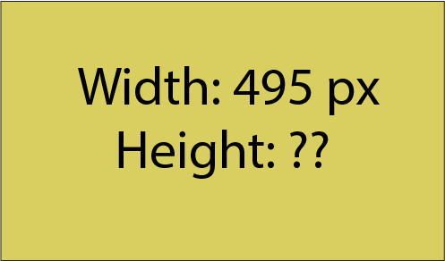

Image Size & Resolutions
Image Size & ResolutionsThe more organised
your work will be, the more professionalism it will reflect.
All the images made in Illustrator should be in the RGB mode
All the images made in Illustrator should be in the RGB mode
Center Image
The central images has image resolution of width: 1200 px, and height depends on the image to maintain the ratio. The image covers 80% of the window width so that when the window is resized the image adjusts itself accordingly. Therefore, remember to make its size as 80% of the window in the image properties (Image properties>>Dimesion Tab)
How to get image properties, right click on the image.
Align the position to center.
After every topic, or every question always insert a horizontal line. (Insert>>Horizontal line)
Side Image
The side image has image resolution of width: 675 px and height depends on the image to maintain the ratio. The side image will cover maximum 45% width of the window. So, adjust the side image according to your need. Make sure that the image is clearly visible.
Table (2 pictures column)
Table (3 picture column)
Table (1 picture column and discription column)
Table (2 picture column and discription column)
Table (3 picture column and discription column)
Credits: Upendra Sai Teja
The side image has image resolution of width: 675 px and height depends on the image to maintain the ratio. The side image will cover maximum 45% width of the window. So, adjust the side image according to your need. Make sure that the image is clearly visible.
Table (2 pictures column)
| Discription:
This image has resolution of width: 700 px and height depends on the
image to maintain the ratio. |
Discription: This image has resolution of width: 700 px and height depends on the image to maintain the ratio. |
| Resize the image according to
your need. |
Resize the image according to your need. |
| Make sure the size
of all images in a table is same. |
Make sure the size of all images in a table is same. |
Table (3 picture column)
|  |
||
| Discription: This image has resolution of width: 495 px and height depends on the image to maintain the ratio. | Discription: This image has resolution of width: 495 px and height depends on the image to maintain the ratio. | Discription: This image has resolution of width: 495 px and height depends on the image to maintain the ratio. |
| Resize the image according to your need. | Resize the image according to your need. | Resize the image according to your need. |
| Make sure the size of all images in a table is same. | Make sure the size of all images in a table is same. | Make sure the size of all images in a table is same. |
Table (1 picture column and discription column)
| Discription 1: This image has resolution of width: 1000 px and height depends on the image to maintain the ratio. | |
| Discription 2: Resize the image according to your need. | |
| Discription 3: Make sure the size of all images in a table is same. |
Table (2 picture column and discription column)
| Discription 1: This image has resolution of width: 450 px and height depends on the image to maintain the ratio. | ||
| Discription 2: Resize the image according to your need. | ||
| Discription 3: Make sure the size of all images in a table is same. |
Table (3 picture column and discription column)
| Discription 1: This image has resolution of width: 375 px and height depends on the image to maintain the ratio. | |||
| Discription 2: Resize the image according to your need. | |||
| Discription 3: Make sure the size of all images in a table is same. |
Credits: Upendra Sai Teja
Copyright ThinkMerit. All rights
reserved.